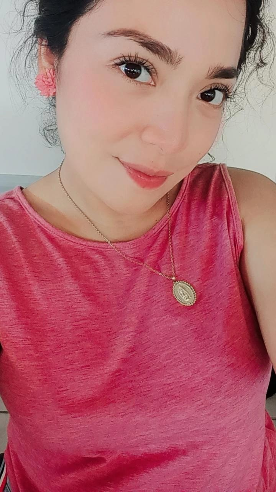

Nací en la ranchería de Santana 2da sección B la palma cárdenas tabasco. Mi madre es Olga Lilia Zapata Gómez y mi padre Toribio Ramírez Rodríguez. A los 12 años ingrese a la escuela Telesecundaria Adolfo Pulido Córdova, tres años más tarde ingrese al nivel medio superior en el Cobatab Plantel 32 de libertad Cunduacán. En ambas instituciones me dieron reconocimientos de aprovechamiento por haber obtenido el primer lugar de promedio en mi generación. Me gustaba mucho participar en concursos de oratoria y declamación. Actualmente estudio un nivel superior en el Tecnológico de Comalcalco con la carrera Ingeniería En Sistemas Computacionales , esta carrera me gusta muchísimo desde que estaba en la secundaria me comenzó a llamar la atención ,hice una carrera técnica en informática y posteriormente reafirme el gusto por la tecnología ,mis padres fueron el impulso principal para comenzar a estudiar ya que tengo su apoyo siempre a pesar de las circunstancias económicas y emocionales por las que atravesamos iniciando la universidad. El avance tecnológico que se puede observar hoy en dia es sorprendente, es por ello que me gusta la mejora que con el paso del tiempo va teniendo el mundo en cuanto a nuevas tecnologías, es de suma importancia para mí el impacto de la tecnología en la medicina, el saber que existen robots que toman el lugar del ser humano en múltiples cirugías es sorprendente. En lo personal los lenguajes de programación me parecen muy interesante ya que a través de ellos se pueden realizar múltiples actividades, en unos años más me gustaría mucho aprender a programar en Python y java de manera fluida ya que me permitirá tener más oportunidades en el mundo laboral. En el transcurso de la carrera he adquirido habilidades en cuanto a la resolución de problemas, capacidad de trabajo en equipo, responsabilidad y compromiso.
Mi objetivo a largo plazo es encontrar un trabajo en el cual tenga la posibilidad de seguir estudiando una maestría y algunas certificaciones que me aporten conocimientos. Planeo si Dios lo permite especializarme en base de datos ya que me gustan mucho ,me parece interesante todo lo que se puede hacer con la manipulación de información .Uno de mis objetivos a corto plazo es terminar la carrera, encontrar un trabajo y sobre todo disfrutar de mi familia ya que he tenido pérdidas muy grandes que me han enseñado que no todo en esta vida es estudio y trabajo, está el valor de la familia y solo se disfruta de ellos una vez en la vida por lo que pretendo saber manejar mis tiempos para poder dedicar tiempo a mis padres.
Soy una persona que me considero afectiva en muchos aspectos, me gusta mucho ser comprensiva y entender la situación de los demás, así como también soy muy estricta en aspectos personales me gusta exigirme mucho y sobre todo luchar por mis objetivos. Algo que me identifica es que soy una persona que se enfrenta a cualquier circunstancia mirando el lado positivo a todo sin importar la situación en la que me encuentre ya que muchas veces mi enfermedad me limita a muchas cosas, pero me gusta afrontar los retos, sonreír todo el tiempo es parte de mi personalidad.
